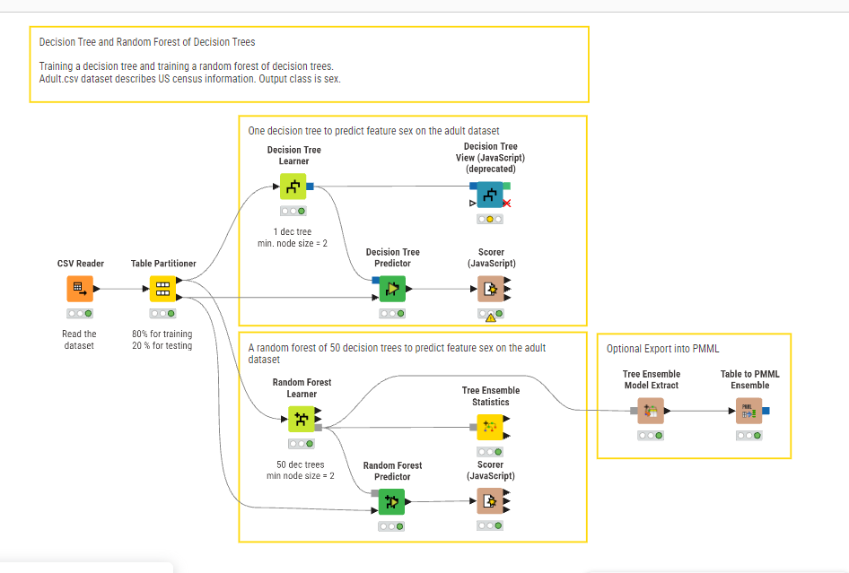
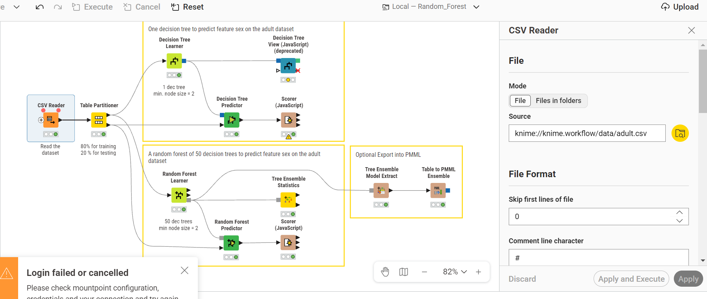
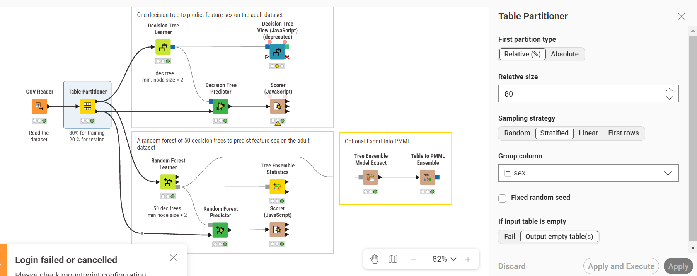

Tugas Analisa Data Menggunakan Random Forest#
Pada tugas ini, saya menganalisa dataset Adult (US Census) menggunakan pendekatan Decision Tree dan Random Forest di dalam KNIME Analytics Platform. Tujuan utama dari analisa ini adalah memprediksi fitur sex (jenis kelamin) berdasarkan informasi sensus seperti usia, pendidikan, pekerjaan, dan lain-lain. Dokumentasi ini menjelaskan setiap tahapan workflow dari awal hingga evaluasi model.
Gambaran Umum Workflow#

Workflow KNIME yang saya rancang terdiri dari beberapa blok utama yang ditandai dengan kotak kuning:
Blok Input & Preprocessing — Membaca dataset
adult.csvdan melakukan partisi data.Blok Decision Tree — Melatih satu pohon keputusan tunggal untuk memprediksi fitur
sex, dilengkapi dengan visualisasi pohon dan evaluasi akurasi melalui Scorer.Blok Random Forest — Melatih ensemble 50 pohon keputusan (Random Forest) untuk memprediksi fitur yang sama, termasuk evaluasi statistik ensemble dan Scorer.
Blok Opsional Export PMML — Menyediakan opsi untuk mengekspor model ensemble ke format PMML agar model bisa digunakan di luar KNIME.
Alur data dimulai dari CSV Reader → Table Partitioner, kemudian bercabang dua: satu jalur menuju Decision Tree Learner/Predictor, dan jalur satunya menuju Random Forest Learner/Predictor.
Membaca Dataset dengan CSV Reader#

Langkah pertama adalah mengimpor dataset. Saya menggunakan node CSV Reader dengan konfigurasi sebagai berikut:
Parameter |
Nilai |
|---|---|
Mode |
File |
Source |
|
Skip first lines of file |
0 |
Comment line character |
|
Dataset Adult (juga dikenal sebagai Census Income Dataset) berisi data sensus penduduk Amerika Serikat. Dataset ini mencakup berbagai atribut demografis dan ekonomi seperti umur, jenis pekerjaan (workclass), tingkat pendidikan, status pernikahan, pekerjaan (occupation), ras, jenis kelamin (sex), jam kerja per minggu, dan negara asal. Dalam analisa ini, kolom sex dipilih sebagai variabel target (output class) yang akan diprediksi oleh model.
Pembagian Data dengan Table Partitioner#

Setelah data berhasil dibaca, saya membagi dataset menjadi dua bagian menggunakan node Table Partitioner. Konfigurasi yang saya gunakan:
Parameter |
Nilai |
|---|---|
First partition type |
Relative (%) |
Relative size |
80 |
Sampling strategy |
Stratified |
Group column |
sex |
Fixed random seed |
Tidak dicentang |
If input table is empty |
Fail |
Saya memilih rasio 80:20 — artinya 80% data digunakan untuk melatih model (training set) dan 20% sisanya untuk menguji model (test set).
Yang penting diperhatikan adalah saya menggunakan strategi Stratified Sampling dengan kolom grup sex. Strategi ini memastikan bahwa proporsi kelas target (Male dan Female) tetap terjaga di kedua partisi. Tanpa stratifikasi, bisa saja terjadi ketimpangan distribusi kelas yang membuat model belajar secara tidak seimbang dan menghasilkan prediksi yang bias.
Pelatihan Decision Tree (Satu Pohon Keputusan)#
Pada blok pertama, saya melatih satu buah Decision Tree dengan konfigurasi:
Jumlah pohon: 1 (Decision Tree tunggal)
Minimum node size: 2
Node Decision Tree Learner menerima data latih dari output pertama Table Partitioner. Algoritma ini bekerja dengan cara:
Menghitung Entropy pada setiap node untuk mengukur tingkat ketidakmurnian data: $\(Entropy(S) = - \sum_{i=1}^{c} p_i \log_2 p_i\)$
Menghitung Information Gain untuk menentukan atribut terbaik sebagai pemisah: $\(Gain(S, A) = Entropy(S) - \sum_{v \in Values(A)} \frac{|S_v|}{|S|} Entropy(S_v)\)$
Proses ini berlangsung secara rekursif sampai data di setiap daun menjadi murni atau mencapai batas minimum ukuran node (2 rekord).
Setelah model selesai dilatih, output modelnya dihubungkan ke dua node:
Decision Tree View (JavaScript) — Untuk menampilkan visualisasi interaktif pohon keputusan, sehingga saya bisa menelusuri logika percabangan dari akar hingga daun.
Decision Tree Predictor — Untuk menerapkan model ke data uji dan menghasilkan prediksi.
Hasil prediksi kemudian dievaluasi menggunakan node Scorer (JavaScript) yang menghitung Confusion Matrix dan metrik akurasi.
Pelatihan Random Forest (Ensemble 50 Pohon)#
Pada blok kedua, saya menggunakan pendekatan Random Forest — sebuah metode ensemble yang membangun banyak pohon keputusan dan menggabungkan hasilnya. Konfigurasi yang saya gunakan:
Jumlah pohon keputusan: 50
Minimum node size: 2
Mengapa Random Forest Lebih Baik dari Decision Tree Tunggal?#
Random Forest mengatasi kelemahan utama Decision Tree tunggal, yaitu overfitting. Berikut perbandingannya:
Aspek |
Decision Tree |
Random Forest |
|---|---|---|
Jumlah model |
1 pohon |
50 pohon (ensemble) |
Risiko overfitting |
Tinggi |
Rendah (rata-rata dari banyak pohon) |
Stabilitas prediksi |
Sensitif terhadap perubahan data |
Lebih stabil dan robust |
Mekanisme |
Satu pohon membuat keputusan |
Voting mayoritas dari 50 pohon |
Setiap pohon dalam Random Forest dilatih menggunakan:
Bootstrap sampling: Setiap pohon dilatih pada sampel acak (with replacement) dari data latih.
Random feature selection: Pada setiap pemisahan node, hanya subset acak dari fitur yang dipertimbangkan.
Prediksi akhir ditentukan melalui majority voting — kelas yang paling banyak dipilih oleh 50 pohon menjadi prediksi final.
Komponen Node pada Blok Random Forest#
Random Forest Learner — Menerima data latih dan membangun ensemble 50 pohon keputusan.
Random Forest Predictor — Menerapkan model ensemble ke data uji untuk menghasilkan prediksi.
Tree Ensemble Statistics — Menampilkan statistik detail dari setiap pohon dalam ensemble, termasuk kontribusi masing-masing fitur.
Scorer (JavaScript) — Mengevaluasi akurasi prediksi Random Forest dengan Confusion Matrix.
Opsional: Export Model ke PMML#
Blok terakhir dalam workflow menyediakan opsi untuk mengekspor model Random Forest ke format PMML (Predictive Model Markup Language):
Tree Ensemble Model Extract — Mengekstrak model ensemble dari Random Forest Learner.
Table to PMML Ensemble — Mengonversi model tersebut ke format PMML standar.
Format PMML memungkinkan model yang sudah dilatih untuk di-deploy dan digunakan di platform lain di luar KNIME, menjadikan model lebih portabel dan siap produksi.
Kesimpulan#
Melalui analisa ini, saya membandingkan dua pendekatan klasifikasi pada dataset Adult:
Decision Tree tunggal memberikan model yang mudah diinterpretasi melalui visualisasi pohon keputusan, namun rentan terhadap overfitting terutama pada dataset yang besar dan kompleks seperti Adult.
Random Forest dengan 50 pohon memberikan prediksi yang lebih akurat dan stabil berkat mekanisme ensemble (bootstrap + random feature selection + majority voting). Trade-off-nya adalah model menjadi lebih sulit diinterpretasi secara langsung.
Penggunaan Stratified Sampling pada Table Partitioner memastikan bahwa evaluasi kedua model dilakukan secara fair dengan distribusi kelas target yang seimbang di kedua partisi data.